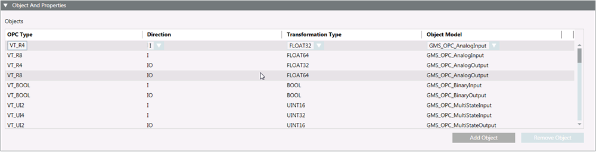

Object and Properties for OPC
The Objects and Properties expander lets you map OPC types and OPC object models: It also lets you define transformation type and the direction of communication for a field point of an object model.

- OPC Type (see OPC Items Data Types)
- Direction (see OPC Items Direction)
- Transformation Type (see OPC Items Transformation Types)
- Object Model
You can modify existing objects or create new objects.

Modifying the import rules may seriously affect system behavior and should always be done by qualified and authorized librarians. Do not modify any of such rules unless you know exactly what you are doing.

The customization of an OPC library to a lower level does not affect the standard import rules (L1-Headquarter). Customized import rules are read and set from the standard import rules; any changes to customized import rules) do not overwrite standard import rules.